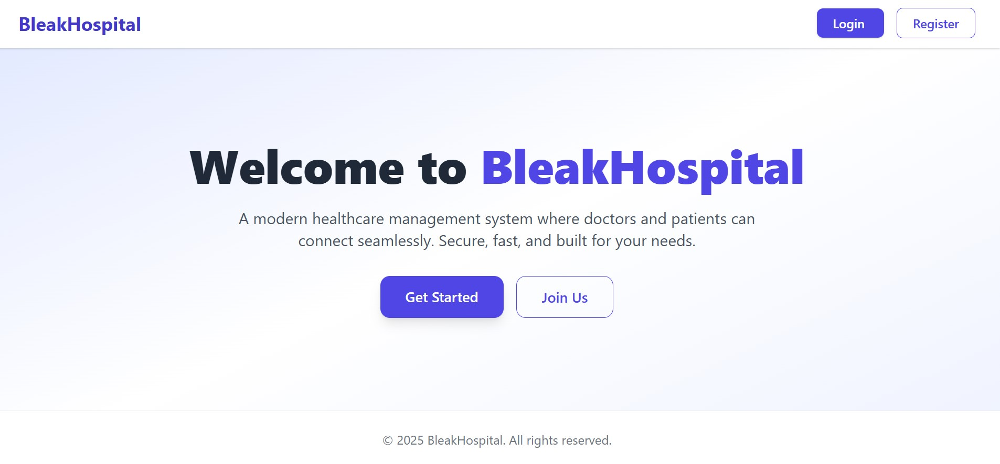
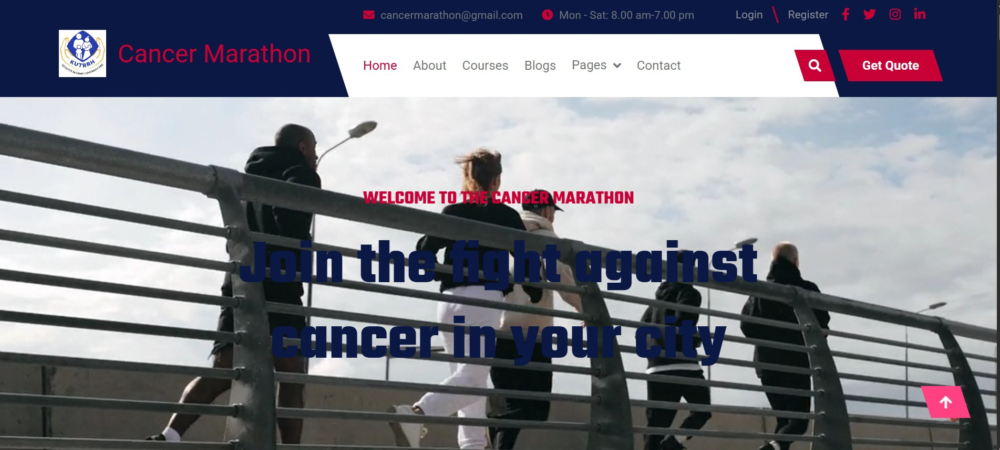
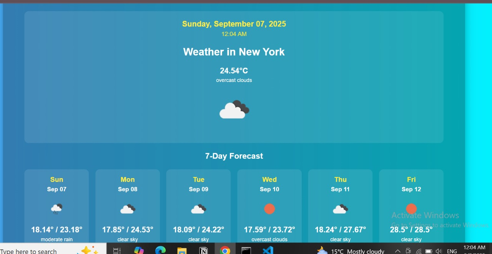

IT Student | Software Developer | Networking Enthusiast
"Passionate about innovative technology solutions and problem-solving."
View ProjectsProfile: Third-year BSc IT student at JKUAT, strong foundation in IT principles and hands-on experience in computer systems. Adaptable, quick learner, team player, and passionate about problem-solving.
Technical: HTML, CSS, PHP, JavaScript, Java, Python, Networking, Cloud
Soft: Teamwork, Time Management, Problem-Solving, Critical Thinking, Communication
Description: Hospital management system for patient registration, doctor management, and appointment tracking.
Technologies: Laravel, PHP, MySQL, JavaScript, HTML, CSS
Lessons Learned: Laravel backend, database relationships, dynamic UI, authentication, deployment readiness.
Description: Web platform for managing cancer awareness marathons, including participant registration, event tracking, and donation collection.
Technologies: Laravel, PHP, MySQL, JavaScript, HTML, CSS
Lessons Learned: Laravel event management, database handling, user authentication, UI/UX for web events.
Description: Web application providing real-time weather information using public APIs.
Technologies: HTML, CSS, JavaScript, OpenWeather API
Lessons Learned: Fetch API data, DOM manipulation, dynamic UI updates, responsive design.
Problem Statement: Perform OSINT reconnaissance on a target domain to enumerate public-facing assets, subdomains, employee emails, and exposed code repositories without violating scope.
Approach: Use passive information-gathering techniques: run subdomain enumeration, search certificate transparency logs, query public WHOIS/DNS, search social networks and Git hosting for leaked secrets, and produce an asset inventory. Respect scope and record evidence/notes for each finding.
Tools Used: whois, dig, crt.sh, subfinder, amass, theHarvester, Google dorking, LinkedIn/X, GitHub search.
Screenshots: Subdomain enumeration output, crt.sh entries, sample LinkedIn results, discovered host CSV.
Key Lessons Learned: Passive OSINT can uncover numerous assets. Always validate ownership and stay within scope. Document everything properly.
Problem Statement: Scan and enumerate a lab network to identify live hosts and open services.
Approach: Use ICMP/TCP discovery to find live hosts, run port scans and version detection, correlate with known CVEs, and document targets.
Tools Used: nmap, masscan, NSE scripts, Vulners plugin, CVE mapping tools.
Screenshots: nmap output, NSE vulnerability scans, prioritized CSV of results.
Key Lessons Learned: Versioning improves targeting; automated CVE lookups help triage but require manual verification.
Problem Statement: Identify and exploit a SQL injection vulnerability in a lab web app.
Approach: Test manually, intercept with Burp, confirm injection with sqlmap, extract limited data for proof-of-concept.
Tools Used: Burp Suite, sqlmap, browser DevTools.
Screenshots: Burp intercepted request, sqlmap confirmation, extracted data proof.
Key Lessons Learned: Manual testing complements automation; always limit exploitation and recommend parameterized queries for remediation.